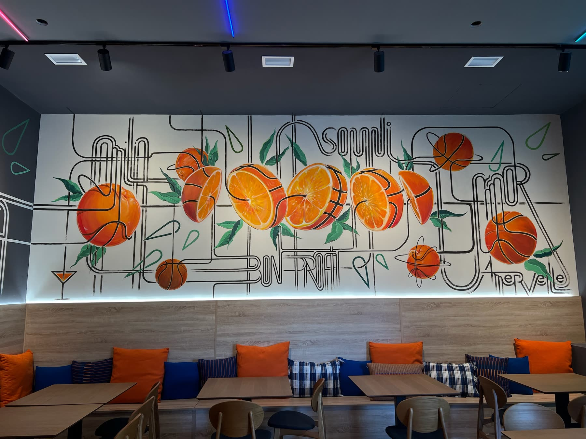
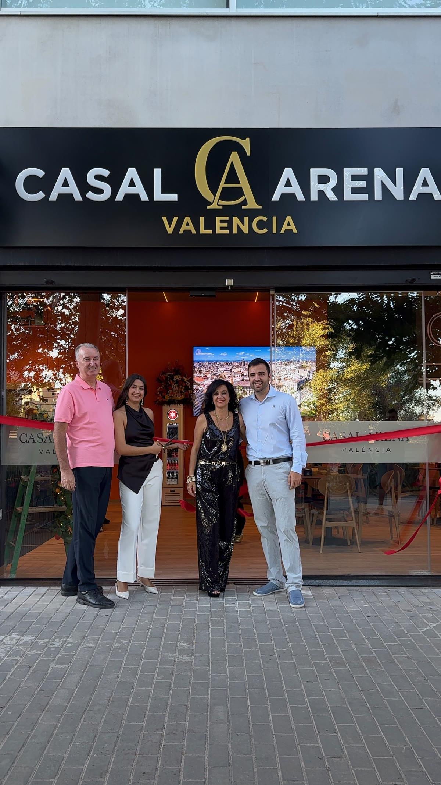
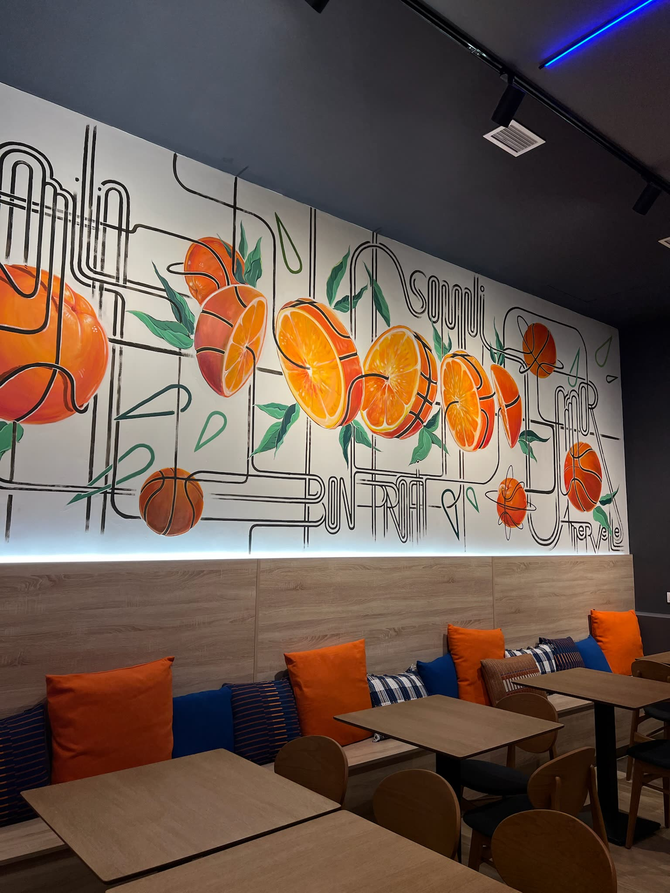
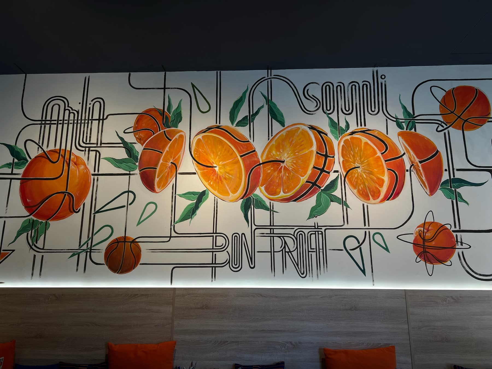
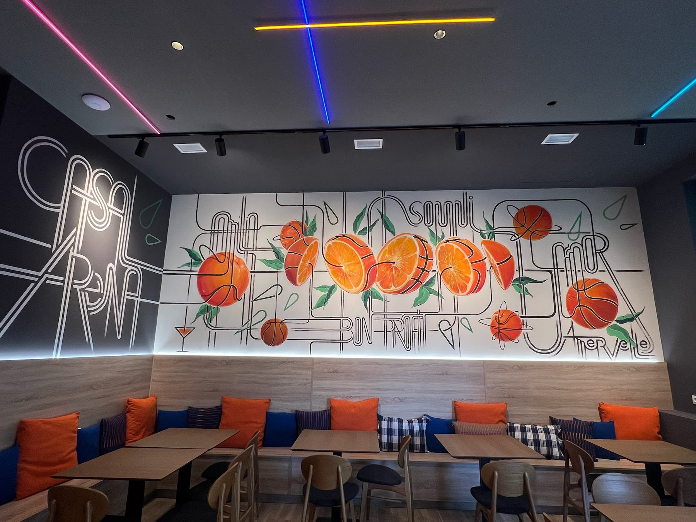

Nuestra historia
Quiénes somos
Una familia
Un sueño cumplido, a pie de pabellón.

Somos una familia que siempre ha soñado con tener un local propio, un lugar donde recibir a la gente como se recibe en casa. Después de mucho esfuerzo e ilusión, ese sueño por fin es una realidad, y hoy nos hace muy felices abrirte sus puertas.
Hemos querido que Casal Arena nazca junto al Roig Arena, en el corazón de un barrio que respira baloncesto. Por eso hemos tematizado cada rincón con el deporte que más nos apasiona: el mural de naranjas convertidas en balones, los colores de la ciudad y el ambiente de los días de partido son nuestra manera de rendir homenaje a València.
Aquí encontrarás cocina de tasca para compartir, un trato cercano y una sala pensada para disfrutar con amigos, en familia o antes y después de ver jugar al equipo de la ciudad. Gracias por acompañarnos en este comienzo.
La familia de Casal Arena




Así se vivió
El día de la inauguración
Así fue el día en que abrimos las puertas de Casal Arena.
Lo que nos mueve
Familia
Casal Arena nace del sueño de una familia que quería tener su propio local y recibirte como en casa.
Baloncesto
Es nuestra gran pasión, y está en cada rincón: del mural de naranjas-balón a la pantalla de los días de partido.
València
Estamos en Quatre Carreres, a un paso del Roig Arena, en un barrio que respira deporte y ciudad.